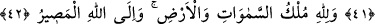
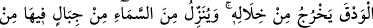
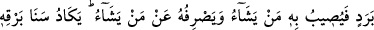
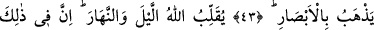
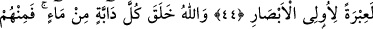
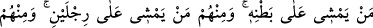
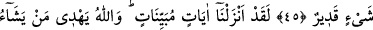
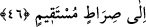

DİZİ DİZİ KUŞLARIN
TESBİHİNİ GÖRMEZ MİSİN?
41. Göklerde ve yerde bulunanlarla dizi dizi kuşların Allah’ı tesbih ettiklerini
görmez misin? Her biri kendi duâsını ve tesbihini (öğrenmiş) bilmiştir. Allah, onların
yapmakta olduklarını hakkıyla bilir.
42. Göklerin ve yerin mülkü Allah’ındır; dönüş de ancak O’nadır.
43. Görmez misin ki Allah bulutları sevk ediyor; sonra onları bir araya getirip üst
üste yığıyor. İşte görüyorsun ki bunlar arasından yağmur çıkıyor. O, gökten,
oradaki dağlardan (dağlar büyüklüğünde bulutlardan) dolu indirir. Artık onu
dilediğine isâbet ettirir; dilediğinden de onu uzak tutar; (bu bulutların) şimşeğinin
parıltısı neredeyse gözleri alır!
44. Allah, gece ile gündüzü birbirine çeviriyor. Şüphesiz bunda basîret sâhipleri
için mutlak bir ibret vardır.
45. Allah, her canlıyı sudan yarattı. İşte bunlardan kimi karnı üstünde sürünür,
kimi iki ayağı üstünde yürür, kimi de dört ayağı üstünde yürür... Allah dilediğini
yaratır; şüphesiz Allah her şeye kadirdir.
46. Andolsun biz (bilmediklerinizi size) açık seçik bildiren âyetler indirdik. Allah,
dilediğini doğru yola iletir.